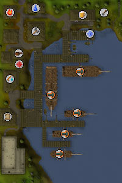
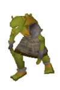
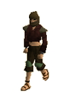
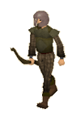

")
Port Sarim
Introduction | Location | Points of Interest | Personalities
Quests | Lawless Dangers | Miscellaneous
Quests | Lawless Dangers | Miscellaneous
Introduction

Anyone looking to travel across the seas for the first time will usually arrive in Port Sarim, ready to negotiate passage to a variety of destinations. Equally, anyone looking to meet their first pirate will probably come here, especially if they want to meet friendly pirates.
Location

Further east beyond Draynor Village is the peaceful town of Lumbridge, where young adventurers cut their teeth before wandering out into a more dangerous world.
Past Rimmington to the west, across the seas, is the island of Karamja, home of the decidedly more piratical Brimhaven.
Points of Interest

If you own an overgrown cat and wish to train it up to a wily cat, or already own a wily cat in need of some exercise, then the Rat Pit is the place for you.
The Magic shop in Port Sarim stocks a nice supply of runes, as well as some fairly useful newts' eyes.
Just south-west of the town, and immediately west of the prison, is a church where you may pray to recharge your Prayer points.
There is a Farming patch in the north-east of the town where farmers may grow a spirit tree, while north of the town is a solitary yew tree, waiting to be felled by a competent lumberjack.
Personalities

Anyone looking to hear gossip, anywhere in the world, should talk to a bartender. They hear more than anyone else, and they'll usually talk for as long as you're willing to listen. Given that most of his regular customers are prone to simply saying 'Arrr!', anyone with a more evolved vocabulary is more than welcome.
|

Redbeard Frank's days of sailing the seas and terrorising more legitimate traders and merchants are well past, and now he spends his days watching the ships come and go. He's not watching them with a tear in his eye, though, he's watching in case someone manages to smuggle some Karamja rum past the customs. Rumour has it that he's got quite some booty stashed somewhere, too...
|
|
| The bartender, obviously, can be found in the Rusty Anchor in the north-east of town. | Redbeard Frank can be found on the docks outside the pub. |

Klarense, no doubt, has always wished that his parents had given him a manlier name; even Robert would be better for a sailor. Still, he makes his way by being more of a dock pirate than a sailing one. He has a boat for sale, though, and you may find that you need it more than you need the gold it will cost you.
|
Thurgo is one of the last of a tribe of Dwarves called the Imcando. Thurgo is a master smith, capable of creating some of the finest weapons and armour in RuneScape. He is not likely to do so for strangers, though, and less likely to make anything without some sort of gastronomic incentive.
|
|
| Klarense can be found tending to the 'Lady Lumbridge' at the south end of the docks. | Thurgo can be found in his hut, south-west of Port Sarim. |

Wormbrain is a particularly nasty goblin whose deeds have warranted spending a bit of time in Port Sarim Jail. Few goblins are ever imprisoned (normally people just kill them instead), and Wormbrain isn't sure if he's a lucky goblin or not because of this.
|
| Wormbrain can be found in Port Sarim Jail. |
Quests
The following quests can be started in Port Sarim:
Lawless Dangers
|

Goblins are common creatures in RuneScape, and a bickering lot they are, too. If they could ever organise themselves properly and stop fighting each other, it is possible that they could threaten large towns, rather than just very young adventurers.
|

Giant rats are larger and nastier versions of the small rodents that cats enjoy preying upon. Their coarse fur is poor armour, and the yellow teeth that they attack with are not nearly as dangerous as they look. Giant rats should prove no difficulty to any but the least experienced adventurers.
|
|
| Goblins can be found in the woods west of the town. | Giants rats can be found lurking around their nests south-west of the town. |
|

There are few criminals free to wander about Port Sarim (unless you include Klarense), so the best place to find them is in the jail. They're quite harmless there, and you can shoot them or kill them with spells if you're that cruel.
|

Thieves on top of their game need never fear being caught. The thief in the jail is obviously having quite a bad day and, like the less skilled and more brutal mugger, he has wound up stuck behind bars where unethical adventurers spend their time tormenting him.
|
|
| The mugger can be found in Port Sarim Jail. | Thieves can be found around Port Sarim, as well as the unlucky one in the Port Sarim Jail. |
|

Some of the most hardened criminals in all of RuneScape are imprisoned in Port Sarim (that Wormbrain is quite a menace to society, you know), so the guards that keep watch over them are vigilant, well-trained, and never sleepy... except when they're on duty.
|

Even though he could easily teach the prison guards a thing or two, pirates aren't known for sobriety, which explains how he ended up in jail. For now, his life of piracy and shanty-singing is over.
|
|
| Guards can be found on the first floor of Port Sarim Jail. | The pirate can be found in Port Sarim Jail. |

The Black Knight ensconced in the Jail was captured a short while ago by the White Knights who, having captured far too many black knights, have run out of room in their own facilities. Black Knights are fairly powerful warriors, and he is obviously much more dangerous than the guards that keep him locked up.
|

Beware the ogres of the deep! Actually, beware Skippy of Rimmington's sobriety, because it's this that makes members think that it's a good idea to go throwing explosives into the water off Mudskipper Point. Mogres are quite dangerous, though they may not look it while wearing fish skins and flippers. They are a Slayer creature, requiring a Slayer level of 32 to kill them.
|
|
| The Black Knight can be found in Port Sarim Jail. | Mogres can be found in the waters off Mudskipper Point. |
Miscellaneous
- If you're running short of bolts for your crossbow, there are a couple of spawn points in the houses west of the Rusty Anchor.
- Members who have completed the Rat Catchers quest and wish to train their overgrown cat to become a wily cat will need to talk to Felkrash in the Rat Pit. She can also rename cats.
- Though there is no bank in Port Sarim, it is only a short walk to Draynor or Falador, both of which are blessed with banking facilities.
- The Asgarnian Ice Dungeon beneath the cliffs east of Thurgo's hut begins quite simply with muggers and pirates. It rapidly becomes much more difficult as you face hobgoblins, ice warriors and ice giants, before coming face-to face with skeletal wyverns. You will need a Slayer level of 72 and an elemental shield in order to defeat them - and even then they are not weak.
- The boat to the Void Knight Outpost is the only way to access Pest Control (members only).

More articles in
Cities and Towns
|
|